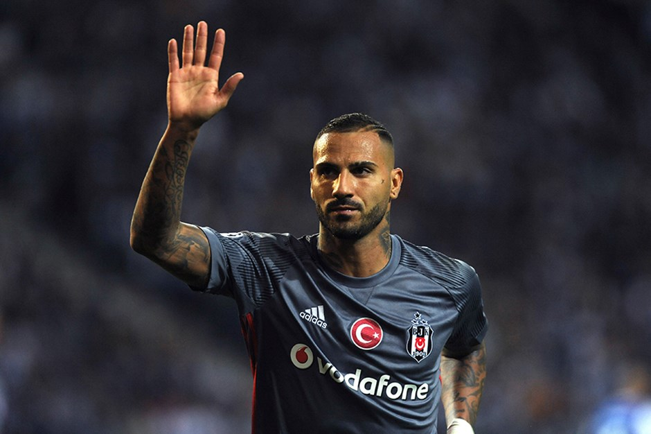

Ricardo Andrade Quaresma Bernardo kanat pozisyonunda görev yapmış Portekizli eski futbolcudur.Futbol kariyerine Sporting Lizbon'da başladı ve sırasıyla Barcelona, İnter Milan, Porto, Chelsea, Beşiktaş, El-Ehli, Kasımpaşa ve son olarak da Vitória forması giydi. Dünya futbolunun sayılı yeteneklerinden biri olarak kabul edilen Quaresma, rabona ve trivela hareketleriyle tanınmaktadır. 15 yıl boyunca Portekiz millî takımı formasını giyen Quaresma, 80 maçta forma giydi ve 10 kez gol atma başarısı gösterdi. 2016 Avrupa Futbol Şampiyonası'nı kazanan takımın parçasıydı.